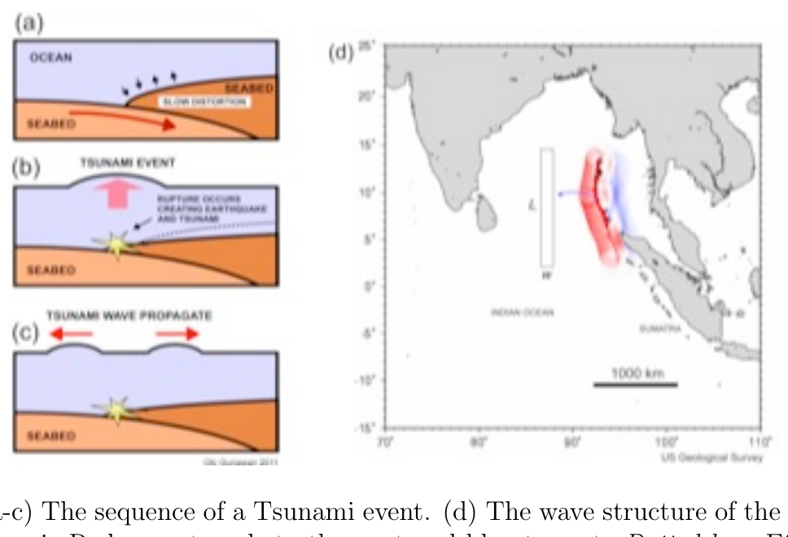
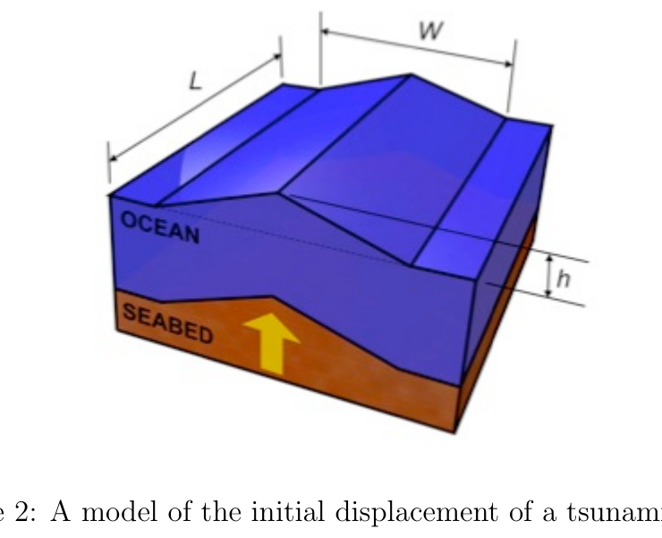
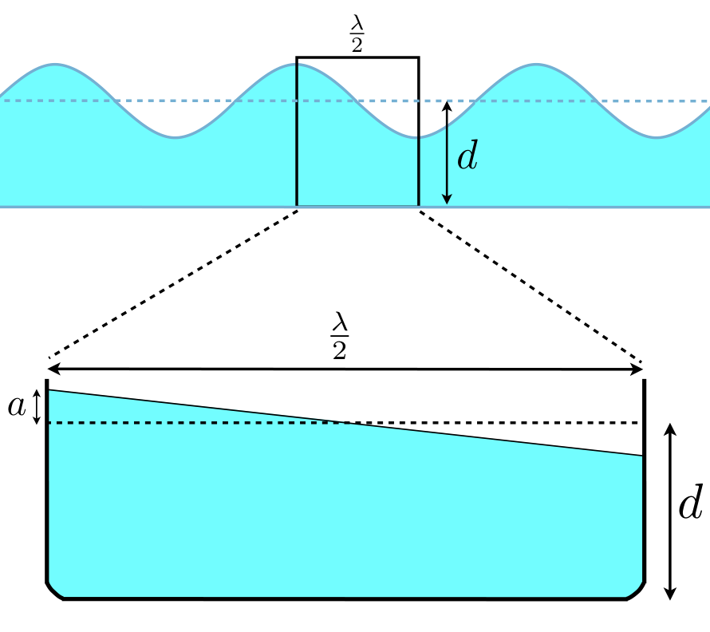
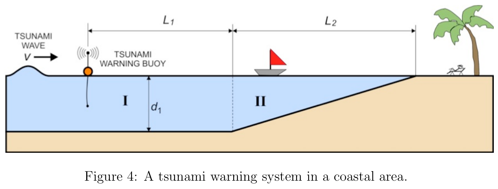
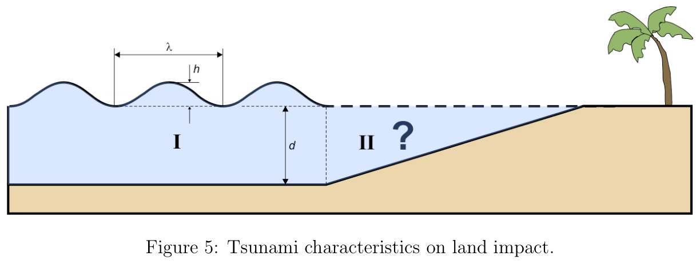
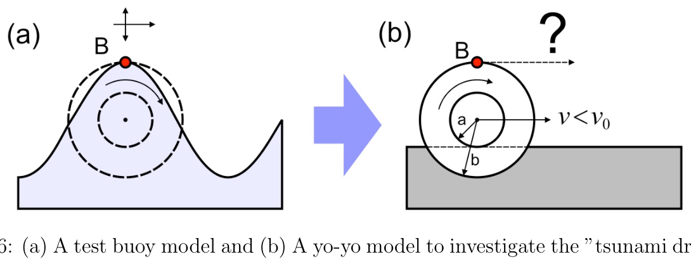

Tsunami — Deadline May 31, 2012
Constants:
- Gravitational acceleration:
- Water density:
Tsunami is an enormous ocean wave phenomenon generated by sudden water displacement due to oceanic seismic (earthquake) activity. Tsunami is extremely devastating to human population living in the coastal region. Recent examples are the Indian Ocean tsunami (2004) and Tohoku-Japan tsunami (2011) that have claimed as many as 230,000 and 15,000 lives respectively.
In this problem we will explore the basic physics of Tsunami that will help us to appreciate some of its fundamental characteristics and help disseminate some potentially life-saving knowledge in the event of such calamity. In this problem we will use some estimated data of the 2004 Indian Ocean tsunami produced by an earthquake off the coast of Sumatra, Indonesia as shown below.

Figure 1: (a-c) The sequence of a Tsunami event. (d) The wave structure of the 2004 Indian Ocean Tsunami. Red wave travels to the west and blue to east. Dotted box: Effective area for the initial tsunami wave generated along the fault line (See Question 1).Part 1. Energy of tsunami
The ocean floor seismic rupture suddenly displaces a large body of water above it along the fault line as shown in Figure 1. This excess body of water will be dissipated as tsunami waves that mainly propagate to the left and right. Let us make a simple model of the excess body of water with triangular cross section as shown in Figure 2. The initial water displacement is covering a large area of fault line of and width . (Note that is really in meter, very small compared to and ).

Figure 2: A model of the initial displacement of a tsunami wave.1.A. Calculate the excess energy that will be dissipated as tsunami! Assume that this excess body of water is at rest right after the seismic event.
1.B. Compare this energy with the Hiroshima atomic bomb that equals to 12500 tons of TNT explosion. One ton of TNT explosion yields of energy.
Part 2. Speed of tsunami
Tsunami wave, in the open ocean, has small amplitude (), extremely long wavelength () and travels on a very deep ocean (). Thus, surprisingly, tsunami can be considered as “shallow water waves” where . Here the speed of tsunami (or phase velocity) is given as: v = \sqrt{gd} \tag{1}
Let us make a very simple derivation of the tsunami speed by using a simple model of one half tsunami wave using a water tank model as shown below. The water is tilting back and forth from left to right given a slight initial imbalance of height. Thus the height will oscillate with time. Let us assume that the width of the water tank is half the wavelength of the tsunami wave . The length of water tank is . Note: For tsunami (shallow water) wave, we assume: .

Figure 3: Water tank model of a tsunami wave to estimate its wave velocity.2.A. Write down the horizontal velocity of the water element as a function of horizontal position , and/or its derivative. Hint: the velocity at the edge of the water tank is zero.
2.B. Express the total kinetic and potential energy of the system in terms of and/or its derivative!
2.C. Show that the system exhibits a simple harmonic oscillator. Calculate the period of oscillation of the water!

Figure 4: A tsunami warning system in a coastal area.2.D. The tsunami displaces wave with wavelength in a time period . The wave speed or “phase velocity” is given as: . Show that: ( means proportional to).
Part 3. Tsunami warning system
Use the tsunami speed equation as given in Eq. 1 above.
3.A. Calculate the average tsunami speed and period in the Indian ocean with depth and a long wavelength of . What object travels close to that speed? (bike, car, passenger jet plane?).
3.B. A tsunami warning system is installed near a coastal region with the seafloor profile that can be modeled as shown in Figure 4: a constant depth followed by a linearly decreasing depth region. We have a tsunami warning buoy that can detect a tsunami wave front at . Calculate the time when the tsunami will hit the land!
Part 4. Tsunami characteristics on land impact
In the ocean where the seafloor depth is constant (region I) the tsunami waves has a characteristic height and coming to the land with linearly increasing ocean floor (region II).

Figure 5: Tsunami characteristics on land impact.4.A. Investigate what happens to the tsunami wave height as it comes crashing to land. Express the relationship of as a function of depth . Hint: The period of the tsunami wave is constant everywhere.
4.B. Sketch the tsunami wave as it approaches the land.
4.C. Estimate the height of tsunami wave crashing to Aceh coast (Sumatra, Indonesia) with final depth of (before the wave breaks) coming from Indian ocean with initial wave height of and depth of . Comment on your finding to explain the devastating effect of tsunami.
Part 5. Tsunami Drawback effect
An early warning sign of the incoming tsunami is the “drawback effect” where the sea water near the beach recedes significantly for hundreds of meter and for about half the tsunami period (about few minutes). An observer may be attracted to the exposed beach unaware of the oncoming danger. (In the 2004 Indian Ocean Tsunami event a little tourist boy in Thailand saved the lives of many because he learnt about this effect from school.)
Let us explore this drawback effect by the following model. Assume that we put a test buoy on the water surface that will track the water particle there. Note that there are two movements: First is the cyclic up and down movement with a period where is the phase velocity of the wave, and second: the horizontal movement because the buoy is dragged by the traveling wave, but with the speed less than the wave phase velocity . Thus to track the trajectory of buoy we can use a Yo-Yo model which rotates with period but the center moves with speed less than .

Figure 6: (a) A test buoy model and (b) A yo-yo model to investigate the “tsunami drawback effect”.5.A. Sketch the trajectory of the buoy as a function of distance as the “Yo-Yo” rolls.
5.B. Highlight your observation that explains the tsunami “drawback” effect!
Fonte: Testo (PDF) — p.1 Topic: Fluid Mechanics, Oscillations & Waves Metodi: Energy Conservation Method, Simple Harmonic Motion Analysis, Dimensional Analysis, Physical Modeling Competenze: Physical Reasoning, Estimation & Approximation, Mathematical Modeling Objects: Container
Tsunami Data limite 31 maggio 2012
**Constanti: **
- Accelerazione gravitazionale:
- densità dell’acqua:
Il tsunami è un enorme fenomeno di onde oceaniche generato da un improvviso spostamento dell’acqua a causa dell’attività sismica oceanica (terremoto). Lo tsunami è estremamente devastante per la popolazione umana che vive nella regione costiera. Gli esempi recenti sono lo tsunami dell’Oceano Indiano (2004) e lo tsunami del Tohoku-Giappone (2011) che hanno richiesto rispettivamente 230.000 e 15.000 vite.
In questo problema esploreremo le basi fisiche del tsunami che ci aiuteranno a comprendere alcune delle sue caratteristiche fondamentali e a diffondere alcune conoscenze che potrebbero salvare vite in caso di catastrofe. In questo problema useremo alcuni dati stimati del tsunami dell’Oceano Indiano del 2004 prodotto da un terremoto al largo della costa di Sumatra, in Indonesia come mostrato di seguito.
**Figura 1: ** (a-c) La sequenza di un evento tsunami. d) La struttura delle onde del tsunami dell’Oceano Indiano del 2004. L’onda rossa viaggia verso ovest e l’onda blu verso est. Cassa puntata: area effettiva per l’onda iniziale di tsunami generata lungo la linea di rottura (vedi domanda 1).
Parte 1. Energia dello tsunami
La rottura sismica del fondo oceanico sposta improvvisamente un grande corpo d’acqua sopra di esso lungo la linea di rottura come mostrato nella Figura 1. Questo eccesso di acqua si disperderà come onde di tsunami che si propagano principalmente a sinistra e a destra. Fate un modello semplice del corpo d’acqua in eccesso con sezione trasversale triangolare come mostrato alla Figura 2. Il spostamento iniziale dell’acqua è che copre una grande area di linea di rottura di e larghezza . (Ricorda che è realmente in metro, molto piccolo rispetto a e ).
**Figura 2: ** Un modello del spostamento iniziale di un’onda di tsunami.
1.A. Calculate the excess energy that will be dissipated as tsunami! Supponiamo che questo eccesso di acqua sia in riposo subito dopo l’evento sismico.
1.B. Compare this energy with the Hiroshima atomic bomb that equals to 12500 tons of TNT explosion. Una tonnellata di esplosione di TNT produce di energia.
Parte 2. Velocità dello tsunami
L’onda tsunami, nell’oceano aperto, ha una piccola amplitudine (), lunghezza d’onda estremamente lunga () e viaggia su un oceano molto profondo (). Pertanto, sorprendentemente, i tsunami possono essere considerati “onde di acqua poco profonda” dove . Qui la velocità dello tsunami (o velocità di fase) è data come: v = \sqrt{gd} \tag{1}
Facciamo una derivazione molto semplice della velocità del tsunami utilizzando un modello semplice di una metà di onda di tsunami utilizzando un modello di serbatoio d’acqua come mostrato di seguito. L’acqua si tende avanti e indietro da sinistra a destra, dato un lieve squilibrio iniziale di altezza. In questo modo l’altezza oscilla nel tempo. Let us assume that the width of the water tank is half the wavelength of the tsunami wave . La lunghezza del serbatoio d’acqua è . Nota: per l’onda di tsunami (acqua bassa) supponiamo: .
**Figura 3: ** Modello di serbatoio d’acqua di un’onda di tsunami per stimare la sua velocità d’onda.
2.A. Scrivere la velocità orizzontale dell’elemento acqua come funzione della posizione orizzontale , e/o della sua derivata. Suggerimento: la velocità al bordo del serbatoio d’acqua è zero.
2.B. Esprimere l’energia cinetica e potenziale totale del sistema in termini di e/o derivata!
2.C. Mostri che il sistema presenta un semplice oscillatore armonico. Calcolare il periodo di oscillazione dell’acqua!
**Figura 4: ** Un sistema di allarme tsunami in una zona costiera.
2.D. Lo tsunami spostano l’onda con lunghezza d’onda in un periodo di tempo . La velocità d’onda o “velocità di fase” è data come: . Indicare che: ( significa proporzionale a).
Parte 3. Sistema di avvertimento tsunami
Utilizzare l’equazione di velocità del tsunami come indicato in Eq. Uno sopra.
3.A. Calcolare la velocità e il periodo medio dello tsunami nell’oceano indiano con profondità e lunghezza d’onda . Quale oggetto si sta muovendo vicino a questa velocità? (bicicletta, auto, aereo aerei passeggeri?).
3.B. Viene installato un sistema di allarme per tsunami vicino a una regione costiera con un profilo del fondo marino che può essere modellato come mostrato alla figura 4: una profondità costante seguita da una regione di profondità che diminuisce linearmente. Abbiamo una boia di avvertimento per i tsunami che può rilevare un’onda di tsunami a . Calculate the time when the tsunami will hit the land!
Parte 4. Caratteristiche dei tsunami sull’impatto sulla terra
Nell’oceano dove la profondità del fondo marino è costante (regione I) le onde di tsunami hanno un’altezza caratteristica e arrivano sulla terra con un aumento lineare del fondo oceanico (regione II).
**Figura 5: ** Caratteristiche dei tsunami sull’impatto sul suolo.
4.A. Investigare cosa accade all’altezza delle onde di tsunami quando si schianta a terra. Esprimere la relazione di come funzione di profondità . L’epoca dell’onda tsunami è costante ovunque.
4.B. Segna l’onda di tsunami mentre si avvicina alla terraferma.
4.C. Estimare l’altezza dell’onda di tsunami che si schianta verso la costa di Aceh (Sumatra, Indonesia) con una profondità finale di (prima delle pause d’onda) provenienti dall’oceano indiano con un’altezza di onda iniziale di e una profondità di . Commenta le sue scoperte per spiegare l’effetto devastante dello tsunami.
Parte 5. Effetto di riduzione dei tsunami
Un segno di avvertimento precoce del tsunami in arrivo è l‘“effetto di ritiro” quando l’acqua del mare vicino alla spiaggia si allontana significativamente per centinaia di metri e per circa la metà del periodo di tsunami (circa pochi minuti). Un osservatore può essere attratto dalla spiaggia esposta senza essere consapevole del pericolo imminente. (Nel tsunami dell’Oceano Indiano del 2004 un ragazzino turistico in Thailandia salvò la vita di molti perché apprese di questo effetto a scuola.)
Esploriamo questo effetto svantaggio con il modello seguente. Supponiamo di mettere una boia di prova sulla superficie dell’acqua che traccia la particella d’acqua lì. Si noti che ci sono due movimenti: primo è il movimento ciclico su e giù con un periodo dove è la velocità di fase dell’onda, e secondo: il movimento orizzontale perché la boia è trascinata dall’onda in movimento, ma con la velocità inferiore alla velocità di fase dell’onda . Per quindi tracciare la traiettoria della boia possiamo utilizzare un modello Yo-Yo che ruota con periodo ma il centro si muove a velocità inferiore a .
**Figura 6: ** (a) Modello di boia di prova e (b) Modello di yo-yo per indagare sull‘“effetto di avversità dei tsunami”.
5.A. Segnare la traiettoria della boia in funzione della distanza in cui i rulli “Yo-Yo” ruotano.
5.B. Fate notare la vostra osservazione che spiega l’effetto “retro” dello tsunami!
Fonte: Testo (PDF) — p.1 Topic: Fluid Mechanics, Oscillations & Waves Metodi: Energy Conservation Method, Simple Harmonic Motion Analysis, Dimensional Analysis, Physical Modeling Competenze: Physical Reasoning, Estimation & Approximation, Mathematical Modeling Objects: Container